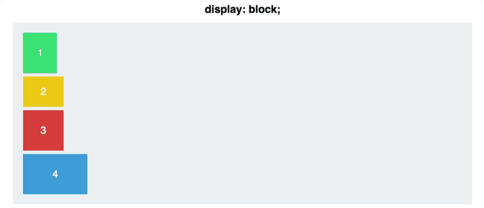

Conceitos básicos
- Display_flex: Identifica qual tag será o container. Com esse display, a tag com o display 'passa a ser container e as tags filhas passam a ser itens.
- Flex-diretion: Identifica qual vai ser o eixo principal (horizontal) e o perpenticular (vertical)

Por padrão, os elementos ficam dispostos no canto esquerdo superior e de forma vertical (display: block;). Quando muda para display: flex, os elementos passam para a horizontal, até que o flex-diretion seja definido.
